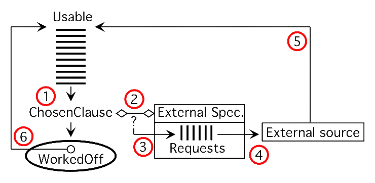

SPASS-XDB Implementation

Algorithm (5,4,1,2,3,6)
while (!Solved && (Usable || DeliveryPending || RequestQueue) {
repeat {
Accept deliveries, add to Usable;
Dequeue requests and send
if (!Usable && DeliveryPending) sleep(1);
until (Usable || !DeliveryPending);
if (!Usable) break;
Move ChosenClause from Usable to WorkedOff;
Enqueue requests for negative literals of ChosenClause
Do relaxed-extended inferencing with ChosenClause
}
- Points to note
- Augmented while loop condition
- Requests and deliveries, one-at-a-time per source
- Request queues can be priority queues
- Preemptive requests are useful, and also necessary
(why?)
- Matching is loosely defined
- Inferencing relaxed for external axioms
- Inferencing includes built-in arithmetic
- Soundness follows naturally
- Completeness is different, but is OK
Controls on Retrieval
- Universal quantification in external specifications
- xdb(limit,*) terms
- xdb(group,*) terms